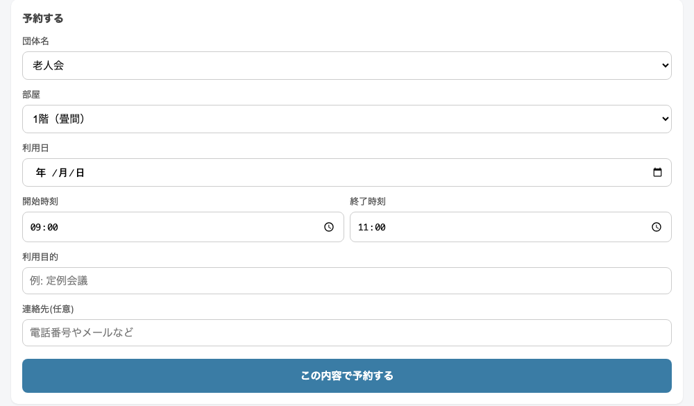

こんにちは、まっさんです。
LINE回覧板に続く、うちの町会のデジタル化第2弾。今回は公民館の予約管理をスマホでできるようにした話です。しかもかかった費用は0円。半日でできました。
うちの地域の公民館は、老人会・地車会・二つの町会の4団体で共用しています。部屋は1階の畳間と2階の板間の2つ。
予約の管理はどうしてたかというと、公民館の壁に貼った手書きの月間予定表です。「21日の午前は老人会」「11日の夜は地車会」と、使う人がそれぞれ書き込んでいくスタイル。
これ、長年これでやってきてるので回ってはいるんです。ただ、困りごとがありました。
予定表を見るには、公民館まで行かなあかん。
「来週の木曜、部屋空いてるかな」と思っても、家からはわからない。わざわざ見に行くか、誰かに電話で聞くか。書き込みが重なって二重予約になりかけたこともあります。紙は紙で確実なんですが、「確認のためだけに足を運ぶ」のはやっぱりしんどい。
そこで、最近仕事でもブログでも世話になっているAI（Claude）に相談してみました。「公民館の予約を4団体で共有できる仕組み、作られへんかな」と。
返ってきた提案は、Googleカレンダーと連動した予約ページを作るというもの。私がやったことは、正直に言うと
・どんな機能がほしいかを日本語で伝える
・Googleの設定画面で、言われたとおりにボタンを押す
・できたものをスマホで触ってみて「ここが使いにくい」と感想を言う
これだけです。プログラムのコードは1行も書いてません。というか書けません。それでも半日後には、ちゃんと動くものができていました。
スマホでページを開くと、こんな画面が出ます。

できることはこんな感じです。
予約のフォームはこれだけ。団体と部屋を選んで、日付と時間、目的を入れるだけです。

予約はぜんぶGoogleカレンダーに自動で記録されるので、管理する側（私）は特別な作業をしなくていい。仕組みはGoogleの無料サービスの範囲内なので、サーバー代もソフト代も0円です。
順調そうに書きましたが、例によってつまずきポイントはありました。
その1、Googleの設定で迷子になる。途中で「設定をオンにしてください」という工程があったんですが、私はGoogleのアカウントを複数使っているせいで、別のアカウントの設定を延々といじってたことがありました。AIから「別のアカウントで設定を変えた可能性が高いです」と指摘されて、ようやく気づく始末。
その2、自分のスマホで開けない。完成していざスマホで開いたら、エラー画面。これも原因は複数アカウントでした。Googleのサービスは、複数アカウントを使っているとたまにこういうことが起きるらしいです。家族のスマホでは普通に開けたので、ひとまずそれで運用開始。同じ状況の方は、Chromeアプリで開くか、使っていないアカウントをログアウトすると直るようです。
これで紙の予定表を廃止！……とは、しません。
LINE回覧板のときと同じ考え方で、紙は紙で残しつつ、スマホでも見られる・予約できるようにする。公民館の壁の予定表に慣れている方はそのままでいいし、家から確認したい人はスマホで。入口が増えただけで、誰かのやり方を奪ったわけやない。ここは大事にしたいところです。
それと、いきなり回覧で全戸に案内……というのもやりません。一般の方が公民館を使うことはまずないので、まずは公民館の鍵を持っている数人だけで小さく運用してみることにしました。しばらく試してみて、使い勝手や困りごとを直してから、必要な人に少しずつ広げていくつもりです。
去年の私なら「予約システムを作る」なんて、業者さんに頼んで何十万円の世界やと思ってました。それが今は、AIに日本語で相談しながら半日・0円でできてしまう。
もちろん、私が特別なわけではないです。パソコンは苦手やし、途中で何回もつまずいてます。ただ、「わからんなりに、AIに聞きながらやってみる」だけで、町会の困りごとがひとつ減った。これは同じように地域の役をやっている方に、けっこう希望のある話やないかなと思います。
しばらく運用してみて、実際に使われたか・困りごとが出たかは、また正直に報告します。
ほな、また。